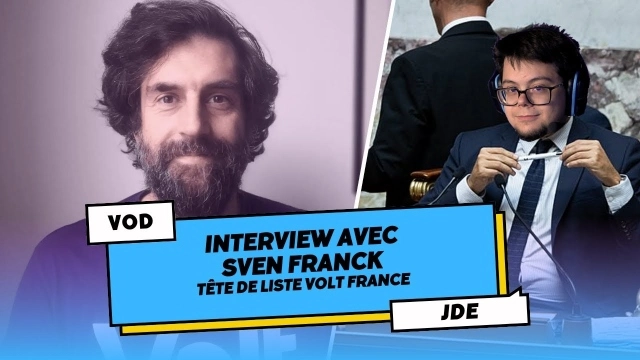
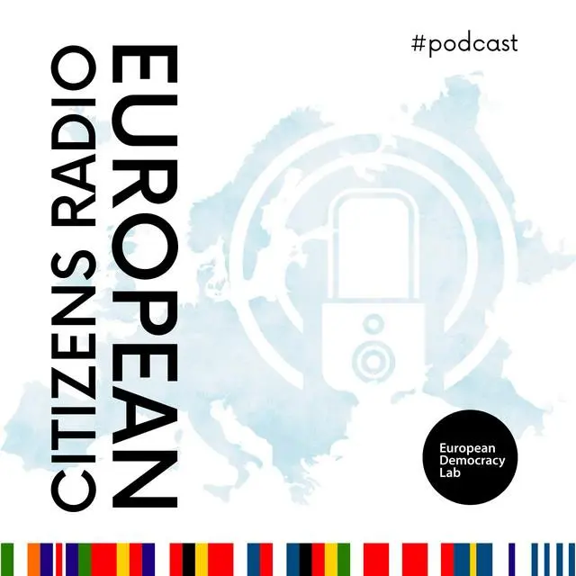
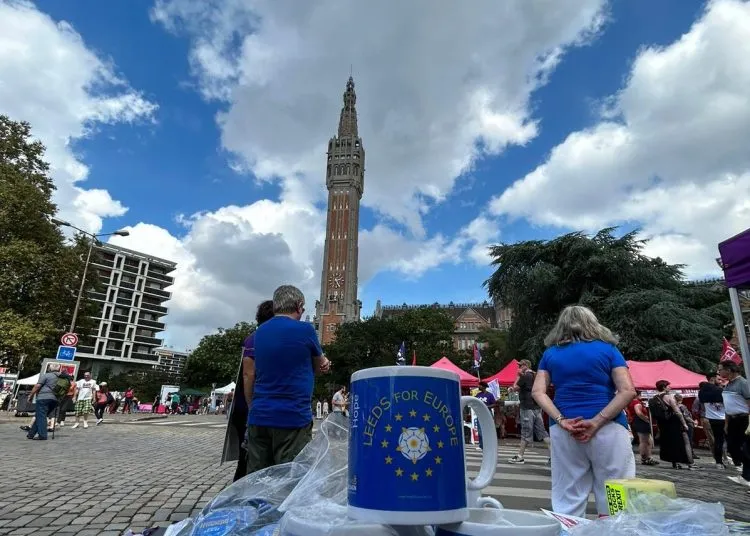
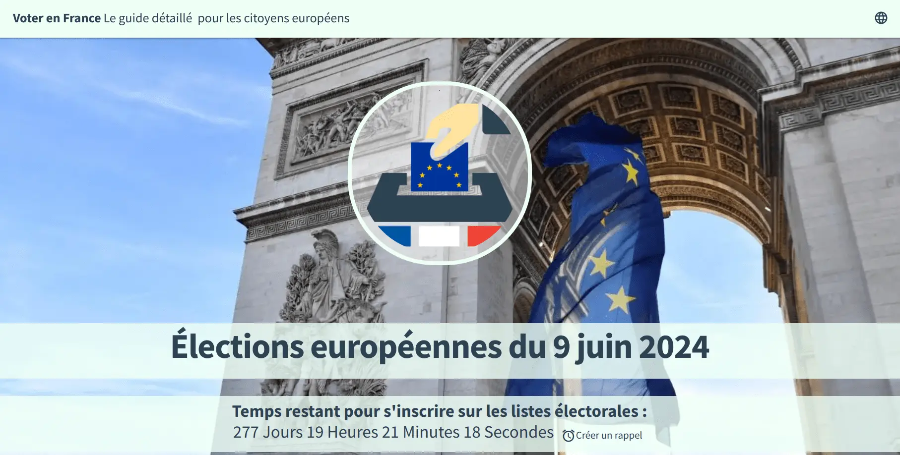
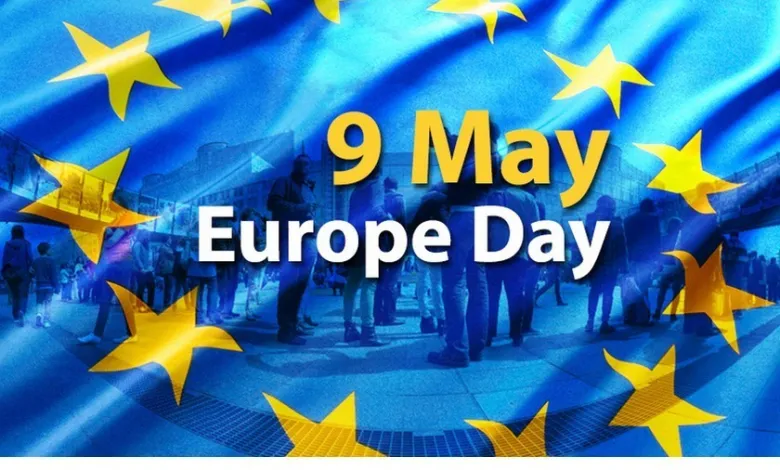
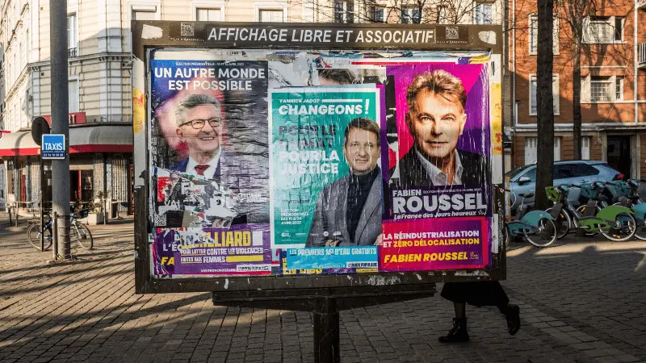
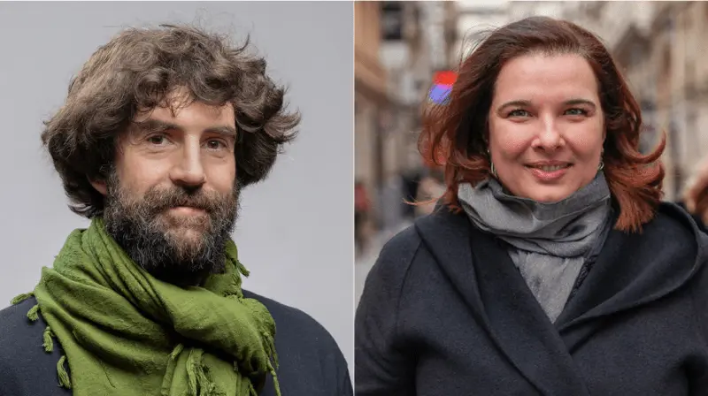

Press
A selection of recent articles, interviews, either about me or written by me.
2024-2025
-
Sauvons l'Europe - Reform of EU treaties, if not now, then when?
(Opinion, Februar 2025, in french)
The past weeks have been decisive for Europe: the member states of the EU find themselves with their backs against the wall, having to demonstrate the unity that until now has existed only on paper. Read the article. -

Hugo au Perchoir - Sven Franck presents the "Volt France" list, a pan-European party for the European elections
(Interview, January 2024, in french)
Interview with Sven Franck, head of the list of Volt France, as part of "Le Journal des Européennes", a weekly programme on Twitch broadcast on Mondays at 8pm with a political interview at 9pm with a candidate in next June's election. Watch the interview.
2022-2023
-

European Citizens Radio - Sven Franck - The french debate on the European elections (en French of course)
(Podcast, December 2023, in french)
Marie-Hélène Caillol, our French collaborator from European Citizens Radio, engages in this podcast in French with Sven Franck from the European party VOLT in France. VOLT is - alongside DiEM - one of the two genuinely European parties, one progressive and the other liberal, presenting themselves under the same name and program in various EU countries. In this interview, Marie-Hélène questions Sven Franck about VOLT's goals for the European elections in June 2024 and analyzes the French debate on Europe. Listen to the Podcast. -
GEAB N⁰ 178 - The monthly newsletter - Eyes on the future.
(Interview, October 2023, in french)
"If technology replaces translation, it must not replace the need to learn foreign languages.". Read the article. -
Confrontations Europe - Gaia-X: The jack of no trades.
(Article, September 2023, in french)
In this article for Confrontations Europe, Sven Franck, from the European Cloud Industrial Alliance, explains what lessons can be learned from the Gaia-X project to develop a European Cloud capable of federating our data securely. Read the article. -

Yorkshire Bylines - A message from Flanders Fields: You must come back...
(Article, September 2023)
A group of campaigners went to France to discover what EU citizens think about a British return. The response encouraged and moved them. Read the article. -

Sauvons l'Europe - Europe starts with voting
(Interview, August 2023, in french)
In the run-up to the European elections, Sauvons l'Europe is supporting Volt France's campaign to make it easier for the 1.5 million European residents living in France to register to vote. To make this initiative a success, we are asking for your help in relaying the message to your local mayor. Read the article. -

Sauvons l'Europe - See you soon, 9th of May
(Opinion, Mai 2023, in french)
Once per year, on May 9th, we are very proud to be European before going back to national agendas the following day. The European project will not progress if the only thing we do is waving European flags or hang them in front of townhalls. Read the article. -

Deutschlandradio - France is much more conservative than in 2017
(Interview, March 2022, in German)
Putin's war in Ukraine has completely upset the plans of most candidates in the French election campaign, says Sven Franck, co-chairman of the Volt party in France. Many issues have become less important, but an awareness has also developed that Europe is important. Read the article.
Before 2022
-
Euractiv - Gaia-X : A trojan horse for technology giants in Europe
(Opinion, November 2020)
. The EU's cloud infrastructure initiative, Gaia-X, runs a high risk of destroying the European ecosystem and hopes of sovereignty after the inclusion of some of the world's largest technology companies in the project, write Stefane Fermigier and Sven Franck. Read the article. -

Euractiv - Europe without means or mandat — a paper dragon
(Opinion, May 2020, in french)
The European institutions are handicapped by the inability of governments to agree on a common strategy to combat COVID-19 and its economic repercussions. Today, more than 70 years after the founding of the EU, they remain blocked and dependent. Read the article.